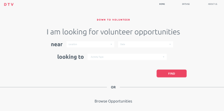
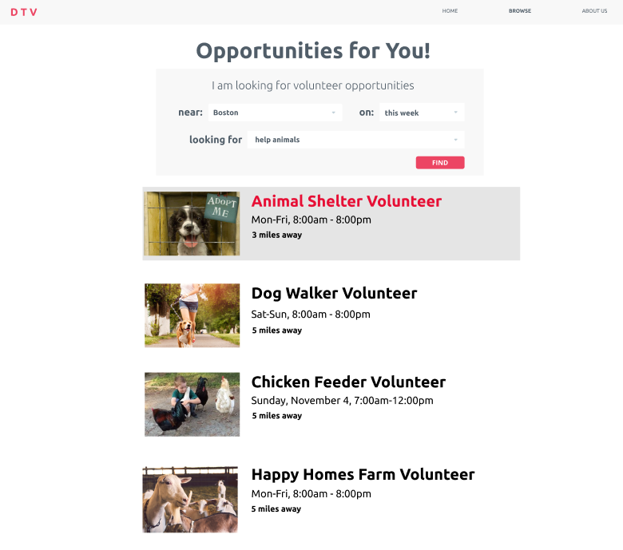
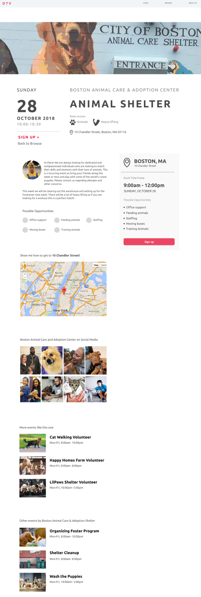
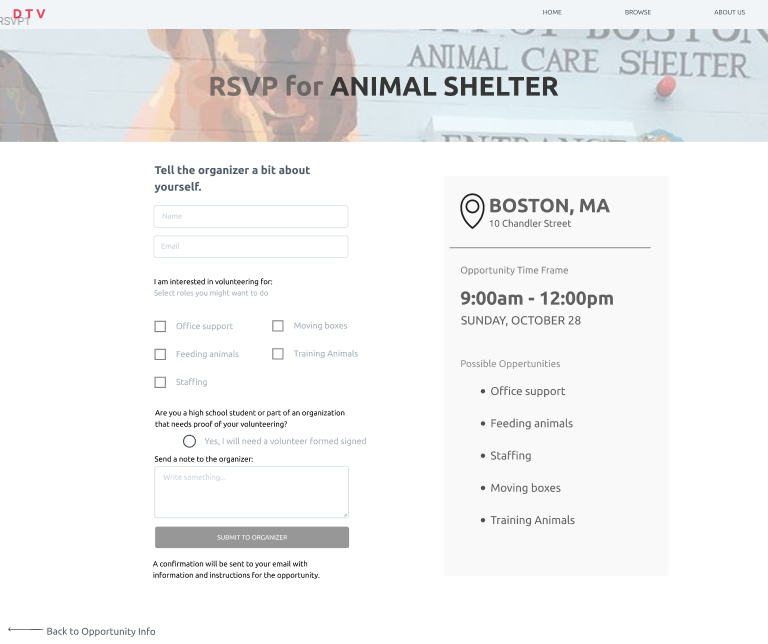
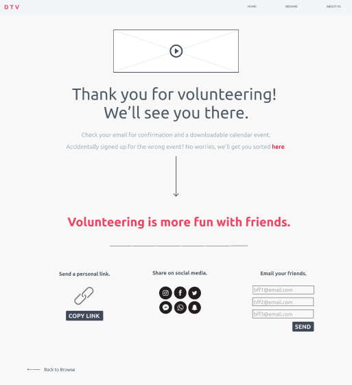
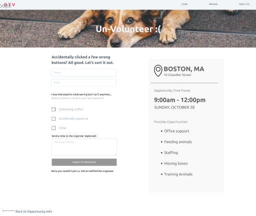

Final Design Refinement
What is the Design?
Our product creates a seamless and frictionless environment for high school and college students to discover and participate in volunteering opportunities. Users are led through a minimalistic platform focused on helping match the user’s interests, location and time requirements with possible opportunities. There are also mechanisms in place to encourage users to bring friends, sign any necessary forms (specifically for high school students), and hold users accountable for showing up to the events they sign up for.Heuristic Evaluation
In this phase we performed a heuristic evaluation on another design team's project, and received an evaluation on our design in response. A big part of examining each individual interaction we had with the other team’s product and through the Heuristic Evaluation framework made it clear that we had overlooked a lot details in our design. As people familiar with the service and what we hope our users will do, we neglected to think of possible user errors and alternative paths to the same result. Plotting out all the possible ways that users can interact with our product (i.e. how to get back to a previous screen when they accidentally click on something they didn’t intend to) is a crucial piece of our design moving forwards.Also, because each individual worked on different sections of the platform largely independent of each other, we struggled with consistency across different pages and linking the pages together to create a seamless experience. Going forwards, all of the different pages will be created using the same platform. The centralization will allow our team members to reference each others’ work to maintain cohesion.
What Changed?
Changes were made between the paper prototype and the current design in order to streamline the user experience, bringing pertinent information to the forefront and reducing the frivolous features that seemed to go unutilized in previous testing.The largest trade off we made while moving from paper to digital prototyping was the implementation of smaller displays of functionality. Because of the limitations of Figma, the prototyping software we are using, creating even 1 drop down on a page with 2 options would require several pages to be generated. Because of this the functionality of the dropdowns and altering presented opportunities based on what users would have put in dropdowns is almost non-existent. While we would like this to be more fleshed out for the final, we made the decision early on in this phase to focus on the more important core structure, navigation, and consistency of the site.
Summary of Major Changes:
Breakdown of Changes by Page
Homepage
The landing page when users come to our website. We simplified the vocabulary of the filters so users would intuitively have an idea of what the dropdown may contain. An immediate browse opportunities options allows more unfamiliar or unsure users to explore the site without feeling the need to give out any information.

Browse Page
The browse page uses a conventional “card” layout to display opportunities to users based on filters they applied (if any). The interaction between how users got from here to either the event or sign up page for a given card was reworked throughout the phase in accordance with research and user feedback (read more about this process below). Ultimately a hover style interaction to alert the user of its function as a button was implemented, as well as a fast sign up button.Event Page
The full dive into all the information about the chosen event. More consistent vocabulary and looks, better stand out buttons, and buttons to make navigating the site as a whole easier. Information is spaced out along the vertical axis in terms of importance, letting users decide how much information they want to take in.We intend to turn the radio dial buttons next to the job types into icons based on feedback that they are currently a false affordance of clickability.


RSVP Page
The user has made it to an event they want to sign up for! Keeping in the theme of minimal information input, the user can just do a barebones sign up consisting of name and email for contact reasons, or go all in with any concerns, questions, or comments they may have.Thank You Confirmation Page
Users are thanked for the support, encouraged to continue using the site, and most importantly and adhering to our target personas, invite others to volunteer with them! User research has yielded that volunteering is just more fun with friends and the activation of energy of actually going to an event is dramatically lowered if a friend is going to. This page serves the function of acting as an easy outlet to do just that we with various share features.

Un-Volunteer Page (new!)
Originally a massive oversight on our part. Thanks to the feedback from Team Slotted Spoon we were alerted to the need for a way for users to rescind their sign up in case it was an accident (something rather difficult to do) or something came up. We quickly implemented it, hoping to both learn why people needed to unsign up for future information and improvements as well as maybe convincing them to stay with the event.Key Insights
One insight we gained is the how important it is to of keep feature both subtle and easy to find. For example, in the beginning, our “more info” and “sign up” buttons were really obvious as they popped out from our white background, and were relatively large in size. Through testing, we found users felt like such obvious features were too overwhelming and there were unnecessary information. Hence, we iterated our design so many of our features were instead, tucked away in ways that make it both easy to find, and also non-intrusive. Another example is the “quick sign up” button that appears while users are browsing our events. Previously, another iteration included a version of the grey “more info” button, which was not as visible, and resulted in users will missing it completely.Generally, within that insight, we learned that for the standard user flow through a website, the location of a particular element should be either nearby the previously used button or be in a conventional location similar to the vast majority of other sites.
Another insight that we gained is on how we can best present information on a page. We were faced with the dilemma of conflicting user feedback for our event listing page. Some users wanted to go directly to signup from our browse page and were annoyed when we forced them to go through more information first. Others were disappointed when clicking on the event brought the user right to signup instead of bringing them to more information. And users got confused when both options, “sign up” and “more information” buttons were present. However, by talking to our instructor, we learned the concept of “dip, dive and devour” - of how users interact with information on a page. Often times, users first scan the page, absorbing as much information as they can in order to determine whether or not they would like to dive deeper into it. Other users, may already have an agenda in mind and want to go straight to the “action” or “goal” of the webpage. By understanding this, we were able to determine a design for our events listing page that displayed minimal headings, with the option to click for more information or go straight to the sign up page.
Remaining Questions
We took a better look into the best solution for the “more info” and “sign up” buttons dilemma. This dilemma arose after some users asked what these be buttons did and the difference between them was unclear, yet when taken off other users were confused about accessing the pages they expected the site to have but could not intuitively find their way to, believing there should be a shortcut through the workflow we had created. After talking with other users and Professor Marco, as well as taking a look at various other sites to see how they do “card” based layouts (AirBNB, eventBrite), we ultimately chose to make the card change as a user hovers, indicating it is clickable as well as having a “fast signup” button, more dedicated to users who knew what they wanted to sign up for already or just wanted to get through the process of signing up for anything. These two choice provided options for both experienced and novice users and we are excited and prepared to see how these changes will affect the user’s ability to navigate the site while hopefully not feeling overwhelmed or confused.One of the largest questions we grappled with, even from the beginning of this process before user interviews, was the question of should we have a login option? On one hand it could potentially make things a lot easier for returning users and because so many sites have a login process, even ones that really don’t need one. On the other hand it would add just another level of stuff the user has to take care of and manage. While user’s occasionally mentioned the possibility of logging in, they commented that they were unsure what exactly they might want to log in for, leading us to believe that again, it might just be a feature people expect but don’t need on every site. Because of the relative few actions on the site as well as the major personas we designed for being “Obligated Oscar” who wants to get through the site and get out as well as “Here for it Harry”, who would probably be sent invites to specific events on the site but never fully explore the site himself, we have decided to exclude logging in.
Because of the decision to not include user login, there is an ongoing question of continuity and how much the user is involved with the site following their sign up. While we did add an “un-volunteer” page (an initial shortcoming and overlook on our part originally), it is accessed through one’s confirmation email of them signing up. Thus the burden of managing the events a user signed up for moves from the site to the user themselves. For users with a lot of commitments on the site this may get tiresome. One way we attempted to mitigate this was including a Google Calendar / ICal link so that users may use existing systems to manage their events, but this depends on them actually using and knowing how to use those systems.
A downscaling we did when taking the design from paper to online was removing the volunteer organizer side of the site. We did not design the organizer facing side of the site like event creation pges and organization creation pages. This allowed us to focus on our target user group, volunteers, and their experience trying to find opportunities.
∑ Individual Efforts < Team Results
Throughout this phase we each took ownership of a different page in the site and divided some other roles as well, documented below.Philipa: For the design refinement phase I worked primarily on creating the event information page, the unvolunteering form, and the instant undo page. Beyond that, I also dedicated a lot of time to organizing the layers, frames, and groups to make sure linking and editing will flow more naturally. I also contributed to iterating on our design as per the heuristic evaluation.
Sam: In this phase, I began by figma modeling the RSVP page and contributed to the browse page and the more info page. I worked to respond to heuristic evaluation feedback by quickly iterating in figma on several different pages. I identified problems in user flow and worked with my team and the instructors to resolve these problems. I wrote about changes made in this phase and key insights in the final report.
Gracey: In this phase I led the digital prototyping of the thank-you confirmation page, analyzed our partner team’s current design to write a heuristic evaluation and contributed to discussions of our heuristic evaluation from our partner team. At the end of the phase I also put this page documenting the design refinement phase together.
Ben: For this phase, most of my work consisted of iterating through various parts of the website, especially the browse page which I created, as well as more generally across all pages for consistency. With the receiving of the heuristic evaluation, many ideas and shortcomings were implemented as well as identifying and brainstorming as a team and with users and the instructors to identify potential solutions to increasingly smaller problems. I played a part in conducting user testing and contributed insights on shortcomings and general overview of this phase for the final report.
April: For this phase, I started off prototyping the homepage on figma. As we continued to iterate on the website prototype as a group, I contributed to changing, developing and altering the other pages as well. I played a role in our user tests, and participated in our discussions around the feedback we received, especially in regards to our heuristic evaluation.